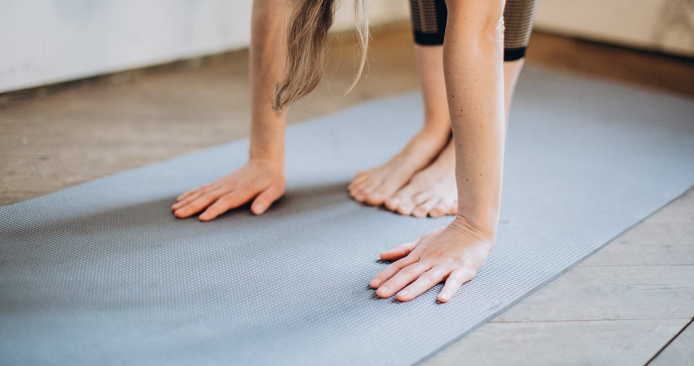

НОВЕ ПОКОЛІННЯ СПОРТУ
Мода на спорт циклічна. То його вважають непотрібним, то — панацеєю від усіх бід. У наш час вчені говорять про те, що регулярні заняття спортом без фанатизму — це один із способів поліпшити якість життя і продовжити його. Можливо, та зарядка, якою ви так нехтуєте, могла б подарувати вам додаткові кілька років до відміряного долею терміну. Заняття спортом дає безліч переваг, які впливають як на фізичний, так і на психологічний стан людини, а також на менш очевидні речі
Як заняття спортом впливає на фізичне здоров'я
Заняття спортом збільшує гнучкість і рухливість суглобів, покращує координацію рухів і рівновагу, знижує ризик розвитку остеопорозу та інших проблем з суглобами і навіть допомагає боротися з деякими видами раку. В середньому спорт на 50% знижує ризик розвитку діабету, на 35% зменшує ризик серцевих захворювань, на 50% зменшує ймовірність виникнення раку товстої кишки і на 20 % — раку грудей, а також на 30% зменшує ризик ранньої смерті.

Спорт допомагає схуднути
Хоча це належить до фізичного здоров'я, ми винесли схуднення в окремий пункт. Навіть при помірних тренуваннях спостерігається підвищена трата енергії, яку організм спочатку бере з вуглеводів, потім — з жирів, а потім — з білків. При поєднанні занять спортом з правильним харчуванням людина почне досить швидко скидати зайву вагу.
